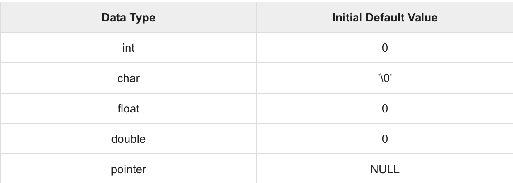

C Öğreticisi 11 (Kapsam Kuralları)
Bu yazılar https://www.tutorialspoint.com/cprogramming/ adresindeki yazı dizilerinin çevirileridir.
Herhangi bir programlamanın kapsamı, programın tanımlanmış bir değişkenin varlığına sahip olabileceği ve bu değişkenin ötesine erişilemeyen bir bölgedir.
C programlama dilinde değişkenlerin bildirilebileceği üç yer vardır -
-Fonksiyonun ya da bloğun içindeki değişkenler yerel(local) değişkenler
-Tüm fonksiyonların dışındaki genel(global) değişkenler
-Fonksiyonun bildirilmesinde kullanılan parametreler formal parametreler
Yerel, genel değişkenleri ve formal parametreleri anlayalım:
Yerel Değişkenler
Bir fonksiyon ya da blok içinde bildirilen değişkenler. Yalnızca bu fonksiyonun veya bloğun içinde kullanılabilirler. Yerel değişkenlerin fonksiyon dışındaki işlevi bilinmemektedir. Takip eden örnek yerel değişkenlerin nasıl kullanıldığını göstermektedir. Tüm değişkenler (a,b,c) main() fonksiyonunda yerel değişken olarak tanımlanmıştır:
#include
int main () {
/* yerel değişken tanımlaması */
int a, b;
int c;
/* gerçek başlatma */
a = 10;
b = 20;
c = a + b;
printf (“ a’nın degeri = %d, b = %d ve c = %d\n”, a, b, c);
return 0;
}
Genel Değişkenler
Genel Değişkenler fonksiyonun dışında tanımlanır. Genellikle programın tepesinde. Genel değişkenler, değerlerini programınız sonlanana dek tutar ve program için tanımlanan fonksiyonların herhangi birinde erişilebilir.
Global bir değişkene herhangi bir fonksiyonla erişilebilir. Başka bir deyişle, bildiriminden sonra tüm programınız boyunca kullanım için genel bir değişken mevcuttur. Aşağıdaki program, global değişkenlerin bir programda nasıl kullanıldığını göstermektedir.
#include
/* genel değişken tanımlaması */
int g;
int main () {
/* yerel değişken tanımlaması */
int a, b;
/* gerçek başlatma */
a = 10;
b = 20;
g = a + b;
printf (“a’nın degeri = %d, b = %d ve g = %d\n”, a, b, g);
return 0;
}
Bir program yerel ve global değişkenler için aynı ada sahip olabilir, ancak böyle bir benzerlikte fonksiyonun içindeki yerel değişkenlerin değeri kullanılacaktır. Örnek -
#include
/* genel değişken tanımlaması */
int g = 20;
int main () {
/* yerel değişken tanımlaması */
int g = 10;
printf (“ g’nin degeri = %d\n”, g);
return 0;
}
Kod derlenip çalıştırıldığında -
g’nin degeri = 10
Formal Parametreler
Formal parametreler, bir fonksiyonda yerel değişkenler olarak ele alınır ve global değişkenlere göre önceliklidirler. Aşağıdaki bir örnek -
#include
/* genel değişken tanımlaması */
int a = 20;
int main () {
/* main fonksiyonunda yerel değişken tanımlaması */
int a = 10;
int b = 20;
int c = 0;
printf (“a ‘nin main() degeri = %d\n”, a);
c = sum( a, b);
printf (“c’ nin main() degeri = %d\n”, c);
return 0;
}
/* iki tamsayı degerini toplayan fonksiyon */
int sum(int a, int b) {
printf (“a’ nin sum() degeri = %d\n”, a);
printf (“b’ nin sum() degeri = %d\n”, b);
return a + b;
}
Derlenip çalıştırıldığında -
a ‘nin main() degeri = 10
a ‘nin sum() degeri = 10
b ‘nin sum() degeri = 20
c ‘nin main() degeri = 30
Yerel ve Genel Değişkenlerin Başlatılması
Yerel bir değişken tanımlandığında, sistem tarafından başlatılmaz, kendiniz başlatmalısınız. Global değişkenler, aşağıdaki gibi tanımladığınızda, sistem tarafından otomatik olarak başlatılır -
Değişkenleri düzgün bir şekilde başlatmak iyi bir programlama uygulamasıdır, aksi halde programınız beklenmeyen sonuçlar üretebilir, çünkü başlatılmamış değişkenler bellek konumlarında zaten mevcut olan bir miktar çöp değerini alacaktır.
https://www.tutorialspoint.com/cprogramming/c_scope_rules.htm